What even is an institution?
2022 Dec 30
See all posts
What even is an institution?
Special thanks to Dennis Pourteaux and Tina Zhen for discussion that led to this post.
A recent alternative political compass proposed by Dennis Pourteaux proposes that the most important political divide of our present time is not liberty vs authoritarianism or left vs right, but rather how we think about "institutions". Are the institutions that society runs on today good or bad, and is the solution to work incrementally to improve them, replace them with radically different institutions, or do away with institutions altogether?

This, however, raises a really important question: what even is an "institution" anyway?
The word "institution" in political discourse brings to mind things like national governments, the New York Times, universities and maybe the local public library. But the word also gets used to describe other kinds of things. The phrase "the institution of marriage" is common in English-language discourse, and gets over two million search results on Google. If you ask Google point-blank, "is family an institution", it answers yes.
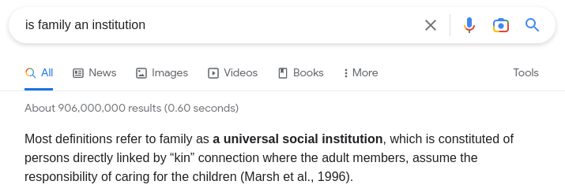
ChatGPT agrees:

If we take ChatGPT's definition that "a social institution is a pattern of behaviors and norms that exist within a society and are thought to be essential to its functioning" seriously, then the New York Times is not an institution - no one argues that it's literally essential, and many people consider it to be actively harmful! And on the other side, we can think of examples of things that maybe are institutions that Pourteaux's "anti-institutionalists" would approve of!
- Twitter
- The Bitcoin or Ethereum blockchains
- The English language
- Substack
- Markets
- Standards organizations dealing with international shipping
This leads us to two related, but also somewhat separate, questions:
- What is really the dividing line that makes some things "institutions" in people's eyes and others not?
- What kind of world do people who consider themselves anti-institutionalists actually want to see? And what should an anti-institutionalist in today's world be doing?
A survey experiment
Over the past week, I made a series of polls on Mastodon where I provided many examples of different objects, practices and social structures, and asked: is this an institution or not? In some cases, I made different spins on the same concept to see the effects of changing some specific variables. There were some fascinating results.
Here are a few examples:
 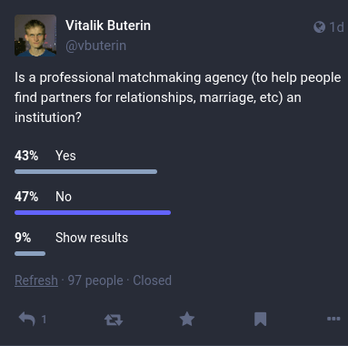
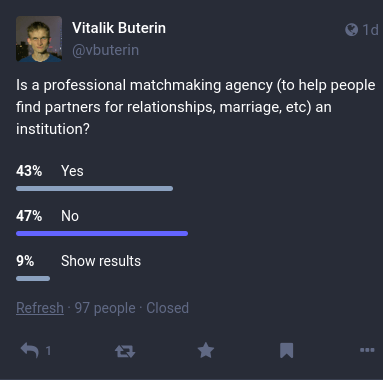
And:
 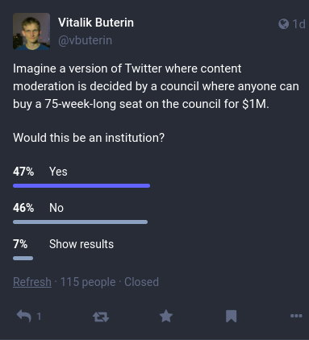 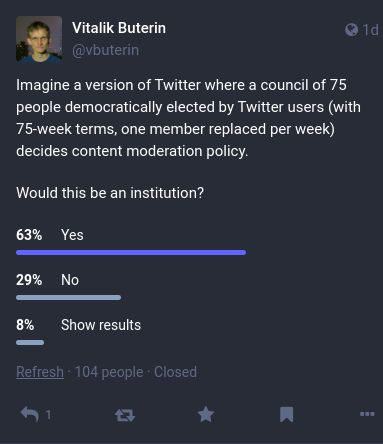
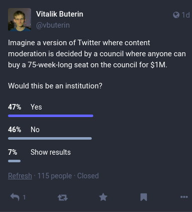 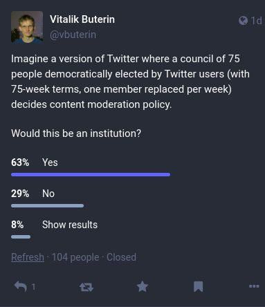
And:
 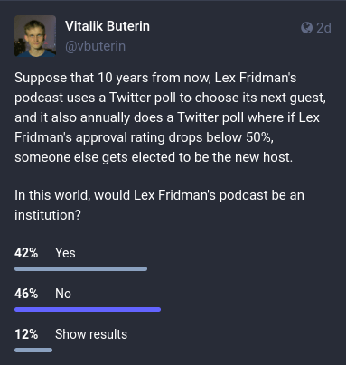
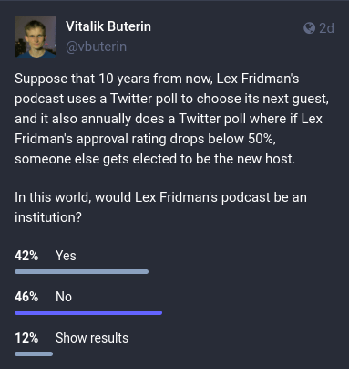
And, of course:
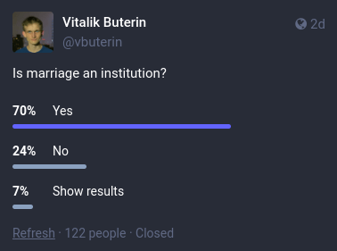 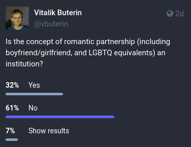 
There's more fun ones: NYT vs Russia Today vs Bitcoin Magazine, the solar system vs what if we started re-engineering it, prediction markets, various social customs, and a lot more.
Here, we can already start to see some common factors. Marriage is more institution-y than romantic relationships, likely because of its official stamp of recognition, and more mainstream relationship styles are more institution-y than less mainstream styles (a pattern that repeats itself when comparing NYT vs Russia Today vs Bitcoin Magazine). Systems with clearly visible human beings making decisions are more institution-y than more impersonal algorithmic structures, even if their outputs are ultimately entirely a function of human-provided inputs.
To try to elucidate things further, I decided to do a more systematic analysis.
What are some common factors?
Robin Hanson recently made a post in which he argued that:
At least on prestigious topics, most people want relevant institutions to take the following ideal form:
Masses recognize elites, who oversee experts, who pick details.
This seemed to me to be an important and valuable insight, though in a somewhat different direction: yes, that is the style of institution that people find familiar and are not weirded out by (as they might when they see many of the "alternative institutions" that Hanson likes to propose), but it's also exactly the style of institutions that anti-institutionalists tend to most strongly rail against! Mark Zuckerberg's very institution-y oversight board certainly followed the "masses recognize elites who oversee experts" template fairly well, but it did not really make a lot of people happy.
I decided to give this theory of institution-ness, along with some other theories, a test. I identified seven properties that seemed to me possible important characteristics of institutions, with the goal of identifying which ones are most strongly correlated to people thinking of something as being an institution:
- Does it have a "masses recognize elites" pattern?
- Does it have a "elites oversee experts" pattern?
- Is it mainstream?
- Is it logically centralized?
- Does it involve interaction between people? (eg. intermittent fasting doesn't, as everyone just chooses whether or not to do it separately, but a government does)
- Does it have a specific structure that has a lot of intentional design behind it? (eg. corporations do, friendship doesn't)
- Does it have roles that take on a life independent of the individuals that fill them? (eg. democratically elected governments do, after all they even call the leader "Mr. President", but a podcast which is named after its sole host does not at all)
I went through the list and personally graded the 35 maybe-institutions from my polls on these categories. For example, Tesla got:
- 25% on "masses recognize elites" (because it's run by Elon Musk, who does in practice have a lot of recognition and support as a celebrity, but this isn't a deeply intrinsic feature of Tesla, Elon won't get kicked out of Tesla if he loses legitimacy, etc)
- 100% on "elites oversee experts" (all large corporations follow this pattern)
- 75% on "is mainstream" (almost everyone knows about it, lots of people have them, but it's not quite a New York Times-level household name)
- 100% on "logical centralization" (most things get 100% on this score; as a counterexample, "dating sites" get 50% because there are many dating sites and "intermittent fasting" gets 0%)
- 100% on "involves interaction between people" (Tesla produces products that it sells to people, and it hires employees, has investors, etc)
- 75% on "intentional structure" (Tesla definitely has a deep structure with shareholders, directors, management, etc, but that structure isn't really part of its identity in the way that, say, proof of stake consensus is for Ethereum or voting and congress are for a government)
- 50% for "roles independent of individuals" (while roles in companies are generally interchangeable, Tesla does get large gains from being part of the Elon-verse specifically)
The full data is here. I know that many people will have many disagreements over various individual rankings I make, and readers could probably convince me that a few of my scores are wrong; I am mainly hoping that I've included a sufficient number of diverse maybe-instiutions in the list that individual disagreement or errors get roughly averaged out.
Here's the table of correlations:
|
Masses recognize elites
|
0.491442156943094
|
|
Elites oversee experts
|
0.697483431580409
|
|
Is mainstream
|
0.477135770662517
|
|
Logical centralization
|
0.406758324754985
|
|
Interaction between people
|
0.570201749796132
|
|
Intelligently designed structure
|
0.365640100778201
|
|
Roles independent of individuals
|
0.199412937985826
|
But as it turns out, the correlations are misleading. "Interaction between people" turns out to be an almost unquestionably necessary property for something to have to be an institution. The correlation of 0.57 kind of shows it, but it understates the strength of the relationship:
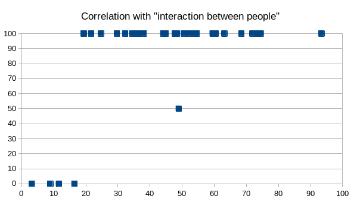
Literally every thing that I labeled as clearly involving interaction had a higher percentage of people considering it an institution than every thing I labeled as not involving interaction. The single dot in the center is my hypothetical example of an island where people with odd-numbered birthdays are not allowed to eat meat before 12:00; I didn't want to give it 100% because the not-meat-eating is a private activity, but the question still strongly implies some social or other pressure to follow the rule so it's also not really 0%. This is a place where Spearman's coefficient outperforms Pearson's, but rather than spurting out exotic numbers I'd rather just show the charts. Here are the other six:

 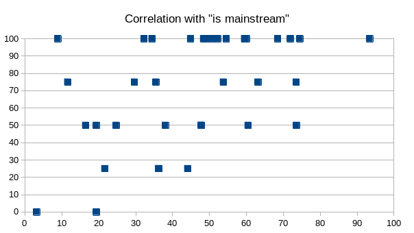 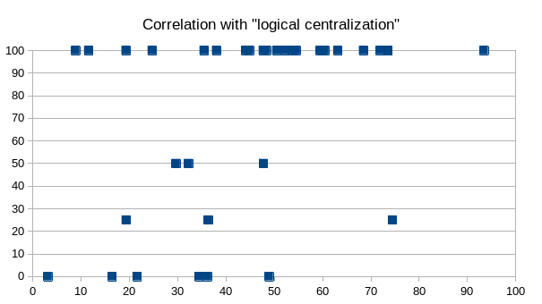 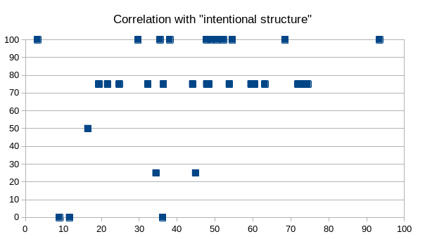 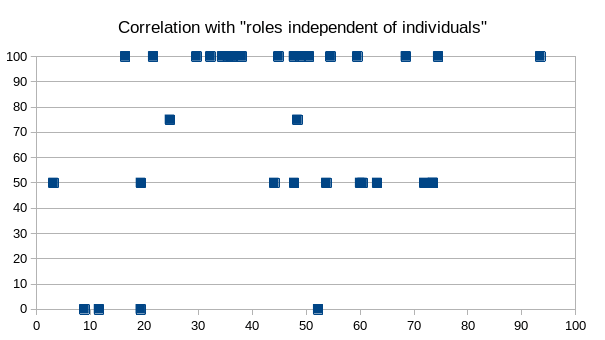
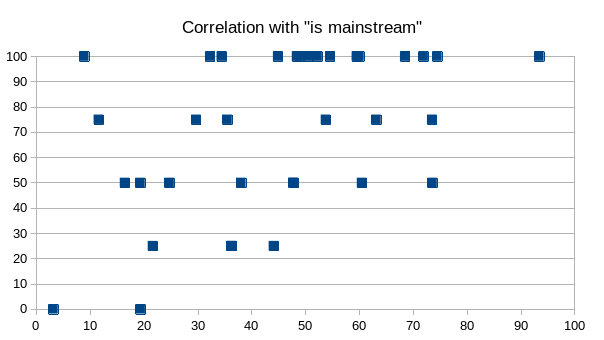 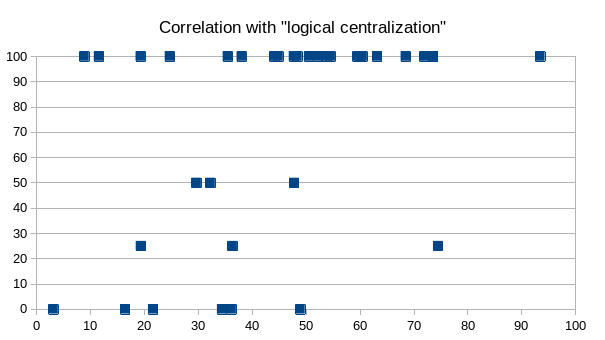 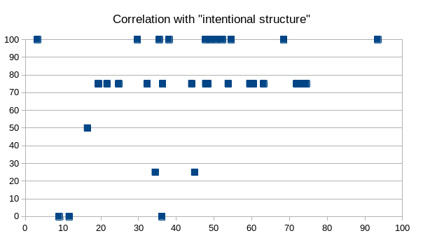 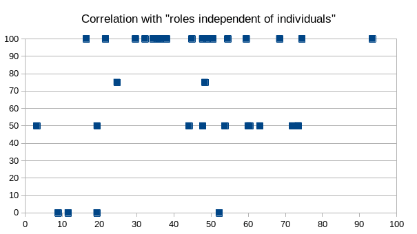
The most surprising finding for me is that "roles independent of individuals" is by far the weakest correlation. Twitter run by a democracy is the most institution-y of all, but Twitter run by a pay-to-govern scheme is as institution-y as Twitter that's just run by Elon directly. Roles being independent of individuals adds a guarantee of stability, but roles being independent of individuals in the wrong way feels too unfamiliar, or casual, or otherwise not institution-like. Dating sites are more independent of individuals than professional matchmaking agencies, and yet it's the matchmaking agencies that are seen as more institution-like. Attempts at highly role-driven and mechanistic credibly-neutral media, (eg. this contraption, which I actually think would be really cool) just feel alien - perhaps in a bad way, but also perhaps in a good way, if you find the institutions of today frustrating and you're open-minded about possible alternatives.
Correlations with "masses recognize elites" and "elites oversee experts" were high; higher for the second than the first, though perhaps Hanson and I had different meanings in mind for "recognize". The "intentional structure" chart has an empty bottom-right corner but a full top-left corner, suggesting that intentional structure is necessary but not sufficient for something to be an institution.
That said, my main conclusion is probably that the term "institution" is a big mess. Rather than the term "institution" referring to a single coherent cluster of concepts (as eg. "high modernism" does), the term seems to have a number of different definitions at play:
- A structure that fits the familiar pattern of "masses recognize elites who oversee experts"
- Any intentionally designed large-scale structure that mediates human interaction (including things like financial markets, social media platforms and dating sites)
- Widely spread and standardized social customs in general
I suspect that anti-institutionalists focus their suspicion on (1), and especially instances of (1) that have been captured by the wrong tribe. Whether a structure is personalistic or role-driven does not seem to be very important to anti-institutionalists: both personalities ("Klaus Schwab") and bureaucracies ("woke academics") are equally capable of coming from the wrong tribe. Anti-institutionalists generally do not oppose (3), and indeed in many cases want to see (3) replace (1) as much as possible.
Support for (2) probably maps closely to Pourteaux's "techno-optimist" vs "techno-minimalist" distinction. Techno-minimalists don't see things like Twitter, Substack, Bitcoin, Ethereum, etc as part of the solution, though there are "Bitcoin minimalists" who see the Bitcoin blockchain as a narrow exception and otherwise want to see a world where things like family decide more of the outcomes. "Techno-optimist anti-institutionalists" are specifically engaged in a political project of either trying to replace (1) with the right kind of (2), or trying to reform (1) by introducing more elements of the right kind of (2).
It would be wrong to ascribe too much intentional strategy to anti-institutionalists: anti-institutionalism is a movement that is much more united in what is against than in support of any specific particular alternative. But what is possible is to recognize this pattern, and ask the question of which paths forward make sense for anti-institutionalists.
From a language point of view, even using the word "institution" at all seems more likely to confuse than enlighten at this point. There is a crucial difference between (i) a desire to replace structures that contain enshrined elite roles with structures that don't, (ii) a preference for small-scale and informal structures over large-scale and formal ones, (iii) a desire to simply swap the current elites out for new elites, and (iv) a kind of social libertinist position that individuals should be driven by their own whims and not by incentives created by other people. The word "institution" obscures that divide, and probably focuses too much attention on what is being torn down rather than what is to be built up in its place.
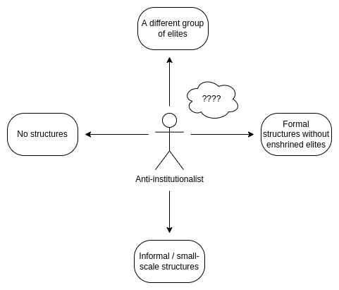
Different anti-institutionalists have different goals in mind. Sure, the person on Twitter delivering that powerful incisive criticism of the New York Times agrees with you on how society should not be run, but are you sure they'll be your ally when it comes time to decide how society should be run?
The challenge with avoiding structures entirely is clear: prisoner's dilemmas exist and we need incentives. The challenge with small-scale and informal structures is often clear: economies of scale and gains from standardization - though sometimes there are other benefits from informal approaches that are worth losing those gains. The challenge with simply swapping the elites is clear: it has no path to socially scale into a cross-tribal consensus. If the goal is not to enshrine a new set of elites forever, but for elites to permanently be high-churn (cf. Balaji's founder vs inheritor dichotomy), that is more credibly neutral, but then it starts getting closer to the territory of avoiding enshrined elites in general.
Creating formal structures without enshrined elites is fascinating, not least because it's under-explored: there's a strong case that institutions with enshrined elite roles might be an unfortunate historical necessity from when communication was more constrained, but modern information technology (including the internet and also newer spookier stuff like zero-knowledge cryptography, blockchains and DAOs) could rapidly expand our available options. That said, as Hanson points out, this path has its own fair share of challenges too.
What even is an institution?
2022 Dec 30 See all postsSpecial thanks to Dennis Pourteaux and Tina Zhen for discussion that led to this post.
A recent alternative political compass proposed by Dennis Pourteaux proposes that the most important political divide of our present time is not liberty vs authoritarianism or left vs right, but rather how we think about "institutions". Are the institutions that society runs on today good or bad, and is the solution to work incrementally to improve them, replace them with radically different institutions, or do away with institutions altogether?
This, however, raises a really important question: what even is an "institution" anyway?
The word "institution" in political discourse brings to mind things like national governments, the New York Times, universities and maybe the local public library. But the word also gets used to describe other kinds of things. The phrase "the institution of marriage" is common in English-language discourse, and gets over two million search results on Google. If you ask Google point-blank, "is family an institution", it answers yes.
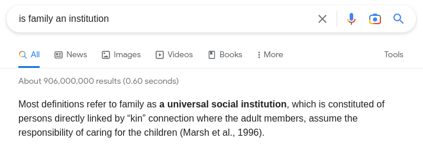
ChatGPT agrees:
If we take ChatGPT's definition that "a social institution is a pattern of behaviors and norms that exist within a society and are thought to be essential to its functioning" seriously, then the New York Times is not an institution - no one argues that it's literally essential, and many people consider it to be actively harmful! And on the other side, we can think of examples of things that maybe are institutions that Pourteaux's "anti-institutionalists" would approve of!
This leads us to two related, but also somewhat separate, questions:
A survey experiment
Over the past week, I made a series of polls on Mastodon where I provided many examples of different objects, practices and social structures, and asked: is this an institution or not? In some cases, I made different spins on the same concept to see the effects of changing some specific variables. There were some fascinating results.
Here are a few examples:
And:
And:
And, of course:
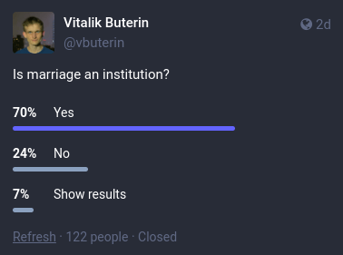 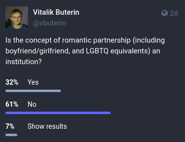
There's more fun ones: NYT vs Russia Today vs Bitcoin Magazine, the solar system vs what if we started re-engineering it, prediction markets, various social customs, and a lot more.
Here, we can already start to see some common factors. Marriage is more institution-y than romantic relationships, likely because of its official stamp of recognition, and more mainstream relationship styles are more institution-y than less mainstream styles (a pattern that repeats itself when comparing NYT vs Russia Today vs Bitcoin Magazine). Systems with clearly visible human beings making decisions are more institution-y than more impersonal algorithmic structures, even if their outputs are ultimately entirely a function of human-provided inputs.
To try to elucidate things further, I decided to do a more systematic analysis.
What are some common factors?
Robin Hanson recently made a post in which he argued that:
This seemed to me to be an important and valuable insight, though in a somewhat different direction: yes, that is the style of institution that people find familiar and are not weirded out by (as they might when they see many of the "alternative institutions" that Hanson likes to propose), but it's also exactly the style of institutions that anti-institutionalists tend to most strongly rail against! Mark Zuckerberg's very institution-y oversight board certainly followed the "masses recognize elites who oversee experts" template fairly well, but it did not really make a lot of people happy.
I decided to give this theory of institution-ness, along with some other theories, a test. I identified seven properties that seemed to me possible important characteristics of institutions, with the goal of identifying which ones are most strongly correlated to people thinking of something as being an institution:
I went through the list and personally graded the 35 maybe-institutions from my polls on these categories. For example, Tesla got:
The full data is here. I know that many people will have many disagreements over various individual rankings I make, and readers could probably convince me that a few of my scores are wrong; I am mainly hoping that I've included a sufficient number of diverse maybe-instiutions in the list that individual disagreement or errors get roughly averaged out.
Here's the table of correlations:
But as it turns out, the correlations are misleading. "Interaction between people" turns out to be an almost unquestionably necessary property for something to have to be an institution. The correlation of 0.57 kind of shows it, but it understates the strength of the relationship:
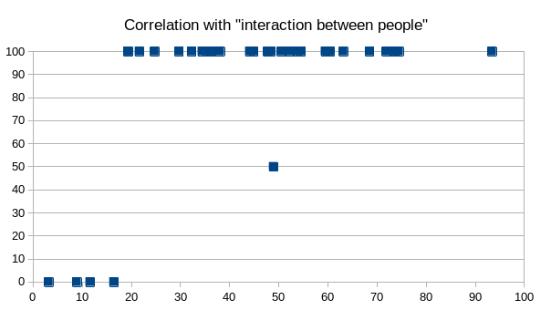
Literally every thing that I labeled as clearly involving interaction had a higher percentage of people considering it an institution than every thing I labeled as not involving interaction. The single dot in the center is my hypothetical example of an island where people with odd-numbered birthdays are not allowed to eat meat before 12:00; I didn't want to give it 100% because the not-meat-eating is a private activity, but the question still strongly implies some social or other pressure to follow the rule so it's also not really 0%. This is a place where Spearman's coefficient outperforms Pearson's, but rather than spurting out exotic numbers I'd rather just show the charts. Here are the other six:
The most surprising finding for me is that "roles independent of individuals" is by far the weakest correlation. Twitter run by a democracy is the most institution-y of all, but Twitter run by a pay-to-govern scheme is as institution-y as Twitter that's just run by Elon directly. Roles being independent of individuals adds a guarantee of stability, but roles being independent of individuals in the wrong way feels too unfamiliar, or casual, or otherwise not institution-like. Dating sites are more independent of individuals than professional matchmaking agencies, and yet it's the matchmaking agencies that are seen as more institution-like. Attempts at highly role-driven and mechanistic credibly-neutral media, (eg. this contraption, which I actually think would be really cool) just feel alien - perhaps in a bad way, but also perhaps in a good way, if you find the institutions of today frustrating and you're open-minded about possible alternatives.
Correlations with "masses recognize elites" and "elites oversee experts" were high; higher for the second than the first, though perhaps Hanson and I had different meanings in mind for "recognize". The "intentional structure" chart has an empty bottom-right corner but a full top-left corner, suggesting that intentional structure is necessary but not sufficient for something to be an institution.
That said, my main conclusion is probably that the term "institution" is a big mess. Rather than the term "institution" referring to a single coherent cluster of concepts (as eg. "high modernism" does), the term seems to have a number of different definitions at play:
I suspect that anti-institutionalists focus their suspicion on (1), and especially instances of (1) that have been captured by the wrong tribe. Whether a structure is personalistic or role-driven does not seem to be very important to anti-institutionalists: both personalities ("Klaus Schwab") and bureaucracies ("woke academics") are equally capable of coming from the wrong tribe. Anti-institutionalists generally do not oppose (3), and indeed in many cases want to see (3) replace (1) as much as possible.
Support for (2) probably maps closely to Pourteaux's "techno-optimist" vs "techno-minimalist" distinction. Techno-minimalists don't see things like Twitter, Substack, Bitcoin, Ethereum, etc as part of the solution, though there are "Bitcoin minimalists" who see the Bitcoin blockchain as a narrow exception and otherwise want to see a world where things like family decide more of the outcomes. "Techno-optimist anti-institutionalists" are specifically engaged in a political project of either trying to replace (1) with the right kind of (2), or trying to reform (1) by introducing more elements of the right kind of (2).
Which way forward for anti-institutionalists or institutional reformers?
It would be wrong to ascribe too much intentional strategy to anti-institutionalists: anti-institutionalism is a movement that is much more united in what is against than in support of any specific particular alternative. But what is possible is to recognize this pattern, and ask the question of which paths forward make sense for anti-institutionalists.
From a language point of view, even using the word "institution" at all seems more likely to confuse than enlighten at this point. There is a crucial difference between (i) a desire to replace structures that contain enshrined elite roles with structures that don't, (ii) a preference for small-scale and informal structures over large-scale and formal ones, (iii) a desire to simply swap the current elites out for new elites, and (iv) a kind of social libertinist position that individuals should be driven by their own whims and not by incentives created by other people. The word "institution" obscures that divide, and probably focuses too much attention on what is being torn down rather than what is to be built up in its place.
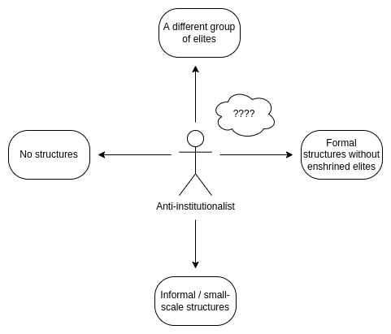
Different anti-institutionalists have different goals in mind. Sure, the person on Twitter delivering that powerful incisive criticism of the New York Times agrees with you on how society should not be run, but are you sure they'll be your ally when it comes time to decide how society should be run?
The challenge with avoiding structures entirely is clear: prisoner's dilemmas exist and we need incentives. The challenge with small-scale and informal structures is often clear: economies of scale and gains from standardization - though sometimes there are other benefits from informal approaches that are worth losing those gains. The challenge with simply swapping the elites is clear: it has no path to socially scale into a cross-tribal consensus. If the goal is not to enshrine a new set of elites forever, but for elites to permanently be high-churn (cf. Balaji's founder vs inheritor dichotomy), that is more credibly neutral, but then it starts getting closer to the territory of avoiding enshrined elites in general.
Creating formal structures without enshrined elites is fascinating, not least because it's under-explored: there's a strong case that institutions with enshrined elite roles might be an unfortunate historical necessity from when communication was more constrained, but modern information technology (including the internet and also newer spookier stuff like zero-knowledge cryptography, blockchains and DAOs) could rapidly expand our available options. That said, as Hanson points out, this path has its own fair share of challenges too.